A satellite in low Earth orbit does not move on a closed Keplerian ellipse. The dominant central attraction is perturbed by a hierarchy of smaller forces whose relative importance is strongly altitude-dependent. The two validation targets, Sentinel-3A and Sentinel-3B, fly in a near-polar, Sun-synchronous orbit at roughly 800 km altitude (inclination ≈98.6°, near-circular), representative of Earth-observation LEO.
The purpose of the engine is twofold: (i) prediction — integrate the state forward over hours to years for trajectory and orbital-lifetime studies; and (ii) determination — recover the initial state and dynamical parameters that best reproduce a set of observations. Both rest on the same force models, so the physical fidelity of those models sets the ceiling on achievable accuracy.
| Satellite | Perigee altitude | Inclination | Eccentricity | Period | POEORB sampling |
|---|---|---|---|---|---|
| Sentinel-3A | 780.3 km | 98.618° | 0.00212 | ~100.9 min | 10 s, 26 h arc |
| Sentinel-3B | 786.9 km | 98.625° | 0.00065 | ~101.0 min | 10 s, 26 h arc |
The satellite's motion is integrated in the geocentric celestial reference frame (GCRF), a pseudo-inertial frame, as a second-order system for the position r and velocity v. The total acceleration is the two-body term plus the sum of perturbations:
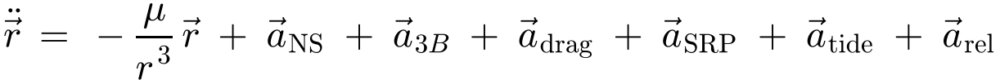
(1)where the perturbing accelerations are, in turn, the non-spherical geopotential (aNS), third-body attraction (a3B), atmospheric drag (adrag), solar radiation pressure (aSRP), solid and ocean tides (atide), and relativistic corrections (arel). Each is an independent, individually switchable physical model. Table 2 orders them by characteristic magnitude at the Sentinel-3 altitude; this hierarchy is what the validation later confirms.
| Perturbation | Magnitude (m s−2) | Relative to central | Dominant effect on the orbit |
|---|---|---|---|
| Central attraction −μr/r³ | ~8.2 | 1 | Keplerian ellipse |
| J2 (oblateness) | ~1×10−2 | 10−3 | Nodal regression, apsidal rotation |
| Higher geopotential (n≥3) | ~1×10−5 | 10−6 | Short-period + resonant terms |
| Luni-solar third body | ~5×10−6 | 10−6 | Secular/long-period on Ω, i, e |
| Atmospheric drag | ~1×10−7 | 10−8 | Secular along-track decay |
| Solar radiation pressure | ~1×10−7 | 10−8 | Periodic; eclipse-modulated |
| Solid Earth tides | ~2×10−9 | 10−10 | Small periodic geopotential change |
| Ocean tides | ~1×10−9 | 10−10 | Small periodic geopotential change |
| Relativity (Schwarzschild) | ~3×10−10 | 10−11 | Apsidal precession (~few m/day) |
| Lense–Thirring (frame drag) | ~1×10−12 | 10−13 | Nodal drag (negligible for LEO) |
The central and J2 terms govern the gross geometry; everything below drag is conservative and cleanly periodic, which is why — as the validation shows — it maps into bounded radial and cross-track errors. Drag is the only large dissipative term, and it is the hardest to model because it depends on the state of the thermosphere.
The Earth's gravity is derived from a potential expanded in spherical harmonics. In body-fixed spherical coordinates (radius r, geocentric latitude φ, longitude λ):
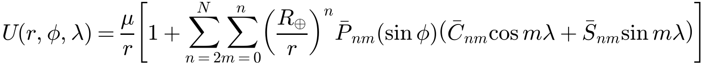
(2)Here R⊕ is the field's reference radius, P̄nm are the fully-normalised associated Legendre functions, and C̄nm, S̄nm are the normalised Stokes coefficients. The acceleration is ∇U. The zonal term n=2, m=0 is the oblateness (J2 = −C20√5 ≈ 1.0826×10−3), which produces the Sun-synchronous nodal regression that defines this orbit class.
The field is the EGM96 satellite-only solution, complete to degree and order 70, with GM = 3.986004415×1014 m³s−2 and R⊕ = 6 378 136.3 m. The published coefficients are fully normalised; they are converted to the unnormalised form used in the recursion by
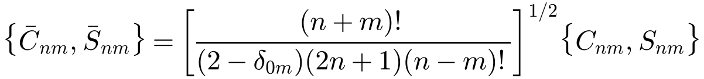
(3)with δ0m the Kronecker delta. Default runs truncate at degree/order 30, which captures essentially all of the geopotential signal relevant over multi-day LEO arcs; the full 70×70 field is available when required.
The potential gradient is computed with the Cunningham–Gottlieb recursion for the normalised potential derivatives (Montenbruck & Gill, Satellite Orbits, §3.2.4), which is numerically stable to high degree and avoids the explicit evaluation of Legendre polynomials and their derivatives. The field is static only in the Earth-fixed frame, so the acceleration is evaluated in ITRF and rotated back to GCRF using the frame transformation of §9. The expansion may be truncated independently in degree and order, allowing, for example, a zonal-only J2–J6 field (order 0) for secular studies or a full tesseral field for high-fidelity work.
The Sun and Moon perturb the geocentric orbit both by attracting the satellite directly and by attracting the Earth itself. Writing the satellite position r and the third body's geocentric position s, the perturbing acceleration is the difference of these two terms:
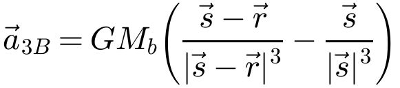
(4)The bracketed difference is the standard formulation: the first term is the direct attraction on the satellite, the second (the "indirect" term) removes the acceleration of the frame origin so that the result is the tidal acceleration relative to the Earth. Gravitational constants used are GM⊙ = 1.32712440018×1020 and GM☽ = 4.9028×1012 m³s−2. The solar and lunar positions come from compact analytical ephemeris series (Montenbruck & Gill), accurate to ≈0.1° / a few hundred kilometres — far better than the 10−6 relative precision needed for the perturbation itself.
Drag is the dominant non-conservative force at this altitude and, as the validation confirms, the single largest contributor to prediction error. The acceleration opposes the velocity of the satellite relative to the co-rotating atmosphere:
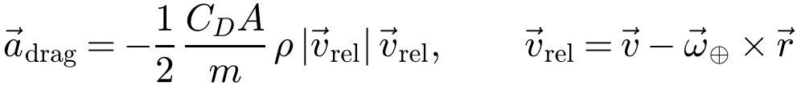
(5)where ρ is the local mass density, CD the drag coefficient, A the cross-sectional area, m the mass, and ω⊕ = 7.292115×10−5 rad s−1 the Earth rotation rate. The grouping CDA/m is the ballistic coefficient; it, together with the density ρ, carries essentially all of the modelling uncertainty — the geometry of Eq. (5) is exact.
Density is supplied by a pluggable atmosphere interface; the high-fidelity option is the NRLMSISE-00 empirical thermosphere model (a clean-room port of the reference C implementation, verified against the model's official test case to seven significant figures). It returns the effective total mass density for satellite drag (including anomalous oxygen above ~500 km) as a function of altitude, latitude, longitude, day-of-year, local solar time, and the solar/geomagnetic activity drivers:
These drivers enter through a space-weather provider that is either a constant (the validation used F10.7 = 220, F10.7a = 205, Ap = 12, representative of the active 2024 solar maximum) or a file-backed historical series (CelesTrak CSSI format). Lower-fidelity alternatives — a static exponential atmosphere and the diurnal Harris–Priester model — are also available for comparison and fast studies.
Sunlight carries momentum; its absorption and reflection push the satellite away from the Sun:
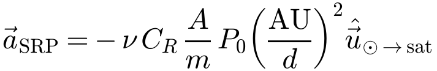
(6)where P0 = 4.56×10−6 N m−2 is the solar radiation pressure at 1 AU, d the Sun–satellite distance, CR the reflectivity coefficient (1 = fully absorbing, 2 = fully reflecting; the validation used 1.3), and ν ∈ [0,1] the fraction of the solar disc visible from the spacecraft. The (AU/d)² factor is the inverse-square fall-off of the flux.
The shadow factor ν is computed from a conical umbra/penumbra model using the apparent angular radii of the Sun and the occulting Earth as seen from the spacecraft, α⊙ = arcsin(R⊙/d) and α⊕ = arcsin(R⊕/r), and their angular separation. Full sunlight (ν = 1), total umbra (ν = 0), and the partial penumbra (computed from the lens-shaped overlap area of the two apparent discs, with the annular case handled separately) are all distinguished. This smooth shadow function is important physically: SRP switches on and off twice per orbit, and a sharp (cylindrical) shadow would inject spurious along-track impulses at each crossing.
The Sun and Moon deform the solid Earth and redistribute ocean mass; both change the geopotential coefficients slightly, which in turn perturbs the orbit.
Implemented to the IERS-2010 Conventions, frequency-independent (Step 1) model: the tide-raising bodies induce corrections to the normalised coefficients for degrees 2 and 3, plus the degree-4 response to the degree-2 tide (the k+ terms):
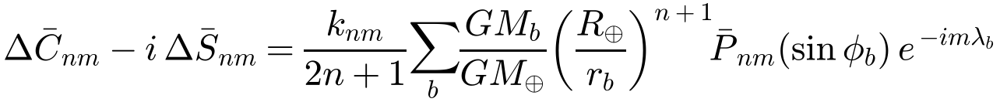
(7)with nominal (real) Love numbers from IERS-2010 Table 6.3 (k20 = 0.29525, k21 = 0.29470, k22 = 0.29801, etc.). The sum runs over the Moon and Sun; rb, φb, λb are the body's body-fixed radius, latitude and longitude. The small frequency-dependent (Step 2) and anelastic (imaginary) terms are omitted as negligible for LEO trajectory work.
Implemented to IERS-2010 Eq. 6.15, driven by a bundled truncation of the FES2004 model — the eight dominant constituents (Q1, O1, P1, K1, N2, M2, S2, K2) to degree and order 4:
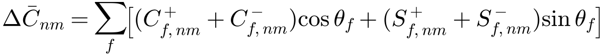
(8)where θf is the Doodson argument of constituent f, assembled from the fundamental (Delaunay/Doodson) astronomical arguments. Both tidal contributions are at the 10−9 m s−2 level — too small to see in the current metre-level validation, but included for completeness and precise long-arc work.
General relativity modifies the central attraction. The dominant (Schwarzschild) correction, from the IERS-2010 Conventions (Eq. 10.12) with PPN parameters β = γ = 1, is always included:
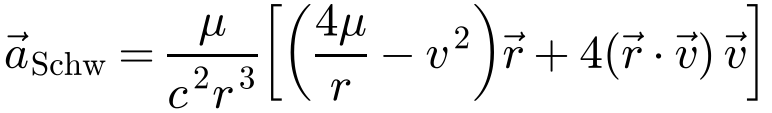
(9)It is of order μv²/(c²r²) ~ 3×10−10 m s−2 and acts chiefly to precess the apsides (a few metres per day). An optional Lense–Thirring (frame-dragging) term from the Earth's rotation is available,
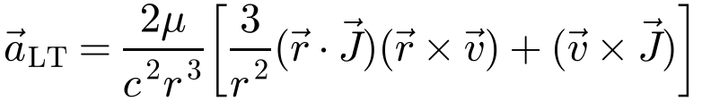
(10)where J is the Earth's angular momentum per unit mass (≈9.8×108 m²s−1). It is ~10−12 m s−2 at LEO — negligible for prediction but retained for completeness. The de Sitter (geodesic precession) term, which requires the Earth's heliocentric velocity, is omitted as sub-mm s−2.
Correctly relating the inertial integration frame (GCRF) to the Earth-fixed frame (ITRF) is essential: the geopotential and atmosphere are naturally expressed in ITRF, and — directly relevant to GNSS — the Sentinel-3 POEORB state vectors are given in ITRF. ITRF is the same realisation family in which GPS/GNSS products are expressed, so the frame chain below is exactly the transformation a GNSS positioning pipeline must also apply.
The full rotation follows the IAU-2006/2000B conventions as a chain of bias, precession, nutation, Earth rotation and polar motion:
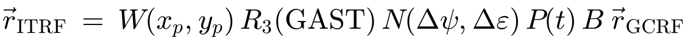
(11)The implementation follows the SOFA reference algorithm and reproduces SOFA to ~10−13 radian in the unit tests. A simpler sidereal-only model (GMST rotation, IAU-82 polynomial, Eq. 12) is also provided for fast runs where sub-arcsecond fidelity is not required:
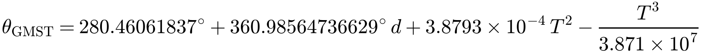
(12)Earth-orientation parameters (EOP: UT1−UTC, polar motion xp, yp) enter through a provider. For the Sentinel-3 validation the UT1−UTC offset carried in the POEORB file itself (ΔUT1 = 0.0579 s) was supplied, which fixes the Earth-rotation phase correctly; polar motion was set to zero. The time scales are related by
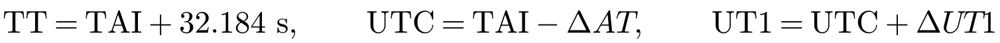
(13)with ΔAT the integer count of leap seconds (full 1972–2017 table embedded) and ΔUT1 the sub-second UT1 offset. Terrestrial Time (TT = TAI + 32.184 s) is the argument of the precession/nutation series; UT1 drives Earth rotation; UTC is the civil clock in which the observations are tagged. Dates are stored as continuous, leap-second-free seconds past the J2000 epoch, so time differences are exact across leap-second boundaries.
The validation methodology is deliberately conservative and transparent. The propagator is seeded from a single POEORB state vector (the first epoch), transformed ITRF→GCRF with the file's own UT1, and integrated forward under the full force model with no fitting. At each subsequent epoch the propagated position is differenced against the precise orbit, and the error vector is decomposed into the local radial–along–cross (RTN) orbital frame:
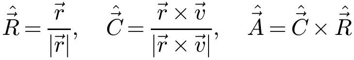
(14)This decomposition is physically diagnostic: different force errors project differently onto these axes. Energy/period (drag) errors accumulate along-track; mismodelled oblateness or out-of-plane forces appear cross-track; and a radial bias indicates a semi-major-axis or central-term error.
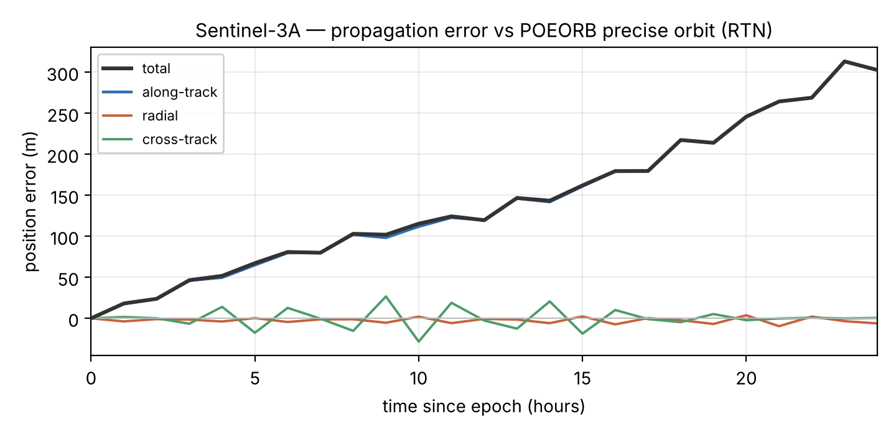
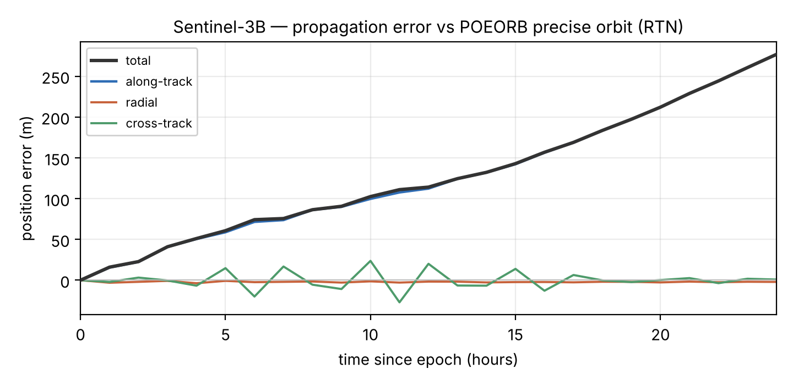
| Satellite | Span | Radial (max) | Cross-track (max) | Along-track (max) | Total RMS | Total max |
|---|---|---|---|---|---|---|
| Sentinel-3A | 12 h | ~6 m | ~28 m | ~123 m | 81.8 m | 131 m |
| Sentinel-3A | 24 h | ~10 m | ~28 m | ~313 m | 165.6 m | 315 m |
| Sentinel-3B | 24 h | ~4 m | ~27 m | ~277 m | 146.2 m | 277 m |
To separate a genuine dynamical error from a merely imperfect initial state, a batch least-squares fit was run: the initial state (and optionally the drag coefficient) is adjusted to minimise the position residual against the POEORB arc. Treating each precise-orbit epoch as a position observation ρi, the fit minimises the RMS
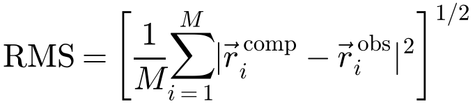
(15)via Gauss–Newton iteration on the (finite-difference, scaled) normal equations with small Levenberg–Marquardt damping (see the technical report for the numerics). The results over a 6-hour arc (position observations every 120 s):
| Satellite | Estimated | Pre-fit RMS | Post-fit RMS | Improvement | Est. CD |
|---|---|---|---|---|---|
| Sentinel-3A | state (6) | 38.4 m | 4.8 m | 8.0× | — |
| Sentinel-3A | state + CD | 38.4 m | 4.5 m | 8.6× | 5.26 (!) |
| Sentinel-3B | state (6) | 41.2 m | 5.9 m | 6.9× | — |
| Sentinel-3B | state + CD | 41.2 m | 5.2 m | 8.0× | −3.20 (!) |
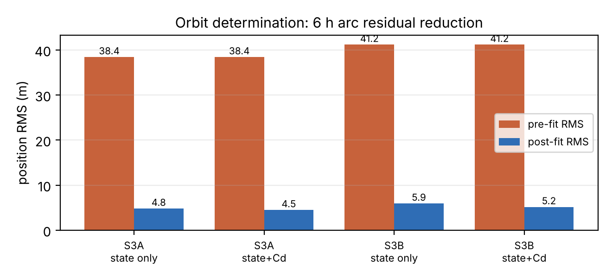
A small persistent acceleration error δa∥ in the flight direction, plus any along-track velocity error δv∥,0 in the seed, integrates into a position error that grows super-linearly:
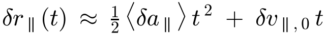
(16)The quadratic term is the signature of a secular acceleration error; the observed S3A growth (~18 m at 1 h → ~120 m at 12 h → ~310 m at 24 h) is close to this t² shape, which is itself strong evidence that the residual is a dynamical (drag) effect and not random noise. By contrast, the conservative perturbations produce bounded, oscillatory radial and cross-track errors, which is exactly what Figures 1–2 show.
| Source | Nature | Approx. effect | Mitigation |
|---|---|---|---|
| Thermospheric density | NRLMSISE-00 climatology + constant (not true daily) F10.7/Ap | dominant | Real historical space weather; density calibration |
| Ballistic coefficient CDA/m | Fixed cannonball; true A varies with attitude | large | Box-wing/attitude model; estimate over long arc |
| Seed state error | Single state vs fitted arc | moderate | Batch fit (removes ~8×, §11) |
| Geopotential truncation (30×30) | Conservative, mostly radial/cross | small | Raise to 70×70 |
| Solar/lunar ephemeris, SRP CR | Conservative, periodic | small | JPL DE ephemeris; estimate CR |
| Omitted EOP polar motion | Frame, ~metre-level | small | IERS finals2000A EOP file |
For a propagation seeded from a single state with no fit and climatological space weather, a 24-hour total error of ~0.15–0.17 km RMS at 800 km is a strong result: it corresponds to roughly 2 m of growth per ~100-minute revolution, i.e. the dynamics reproduce each orbit to about one part in 3×106 of the orbit circumference. The POEORB reference itself (~cm) is negligible in this budget, so the numbers above are the engine's own error, not the reference's. With a fitted arc the instantaneous accuracy is at the few-metre level (Table 4).
The validation against independent, GNSS-derived Sentinel-3 precise orbits demonstrates that the conservative dynamics (geopotential, luni-solar attraction, tides, relativity) and the GCRF↔ITRF frame chain are correct at the metre level, and that the residual prediction error is physically localised in the drag/ballistic channel. The engine is therefore a sound basis for both long-term trajectory prediction and orbit determination. The following refinements, in physical priority order, would most improve accuracy: